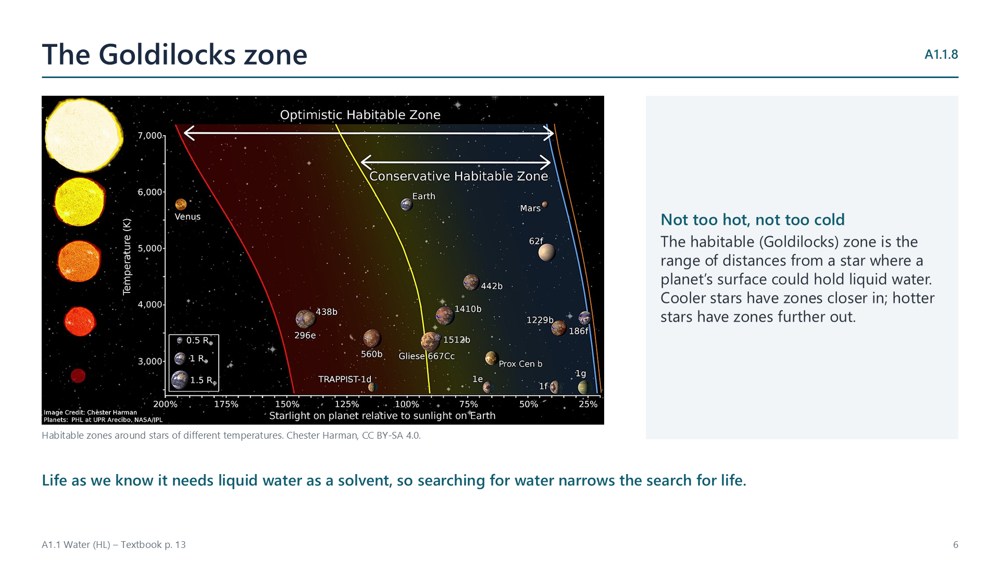

Where Earth’s water came from
pp. 11–12
The Earth formed about 4.5 billion years ago, too close to the Sun and too hot for water vapour to condense. Water ice could form only further out, so most of Earth’s water is thought to be extraplanetary, delivered by asteroids. Some carbonaceous chondrite meteorites hold water in their minerals, with a deuterium-to-hydrogen ratio close to that of seawater. Earth kept its water because its gravity holds water vapour and an atmosphere, and it is cool enough for vapour to condense into oceans. Smaller Mars lost most of its atmosphere and surface water.